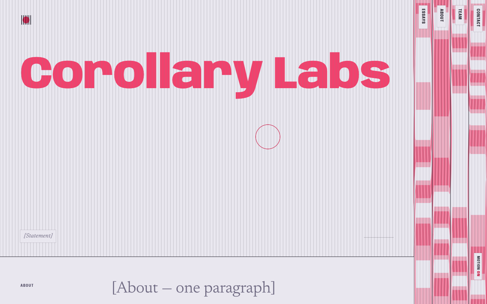
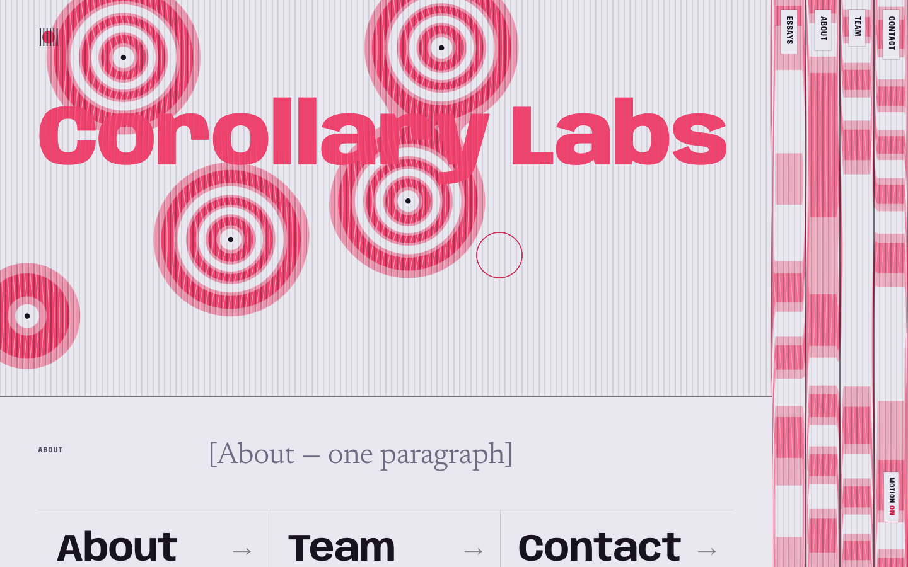
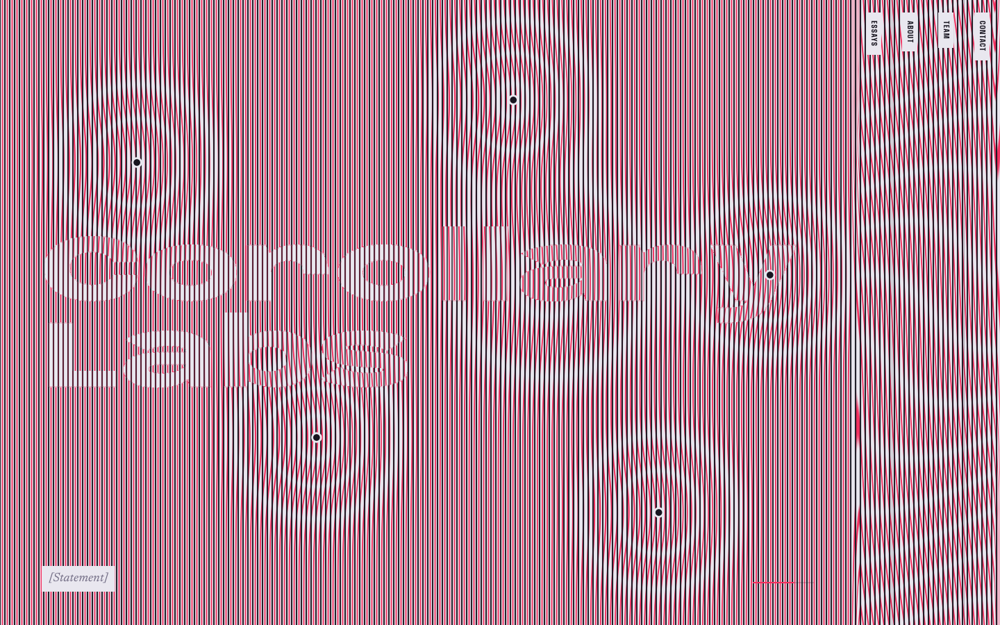
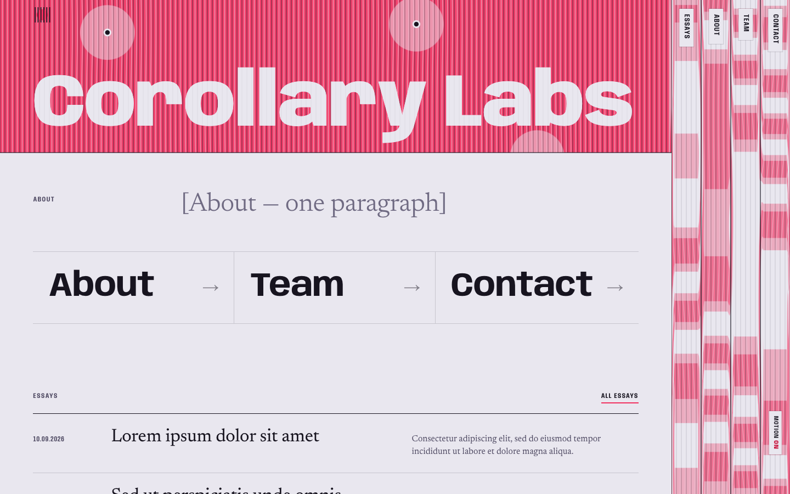
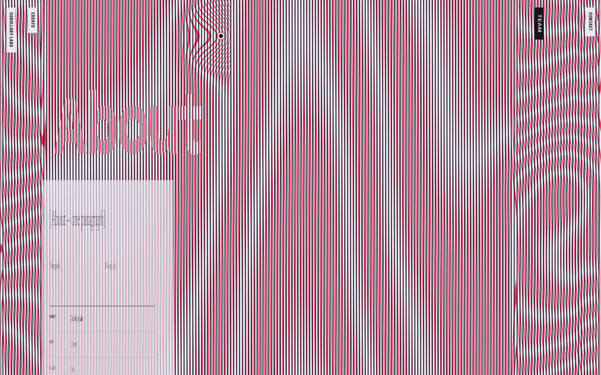
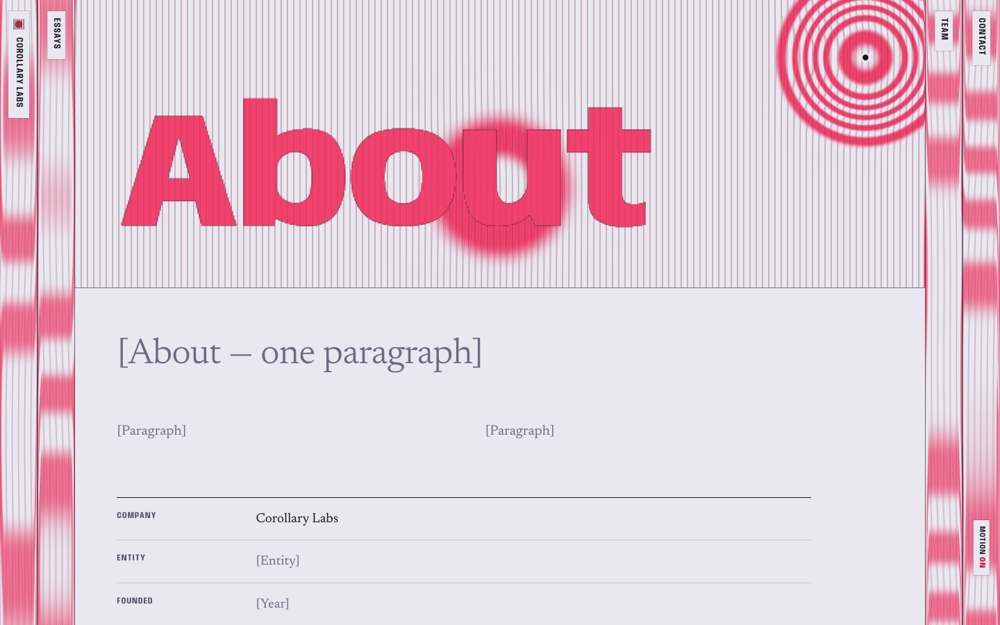
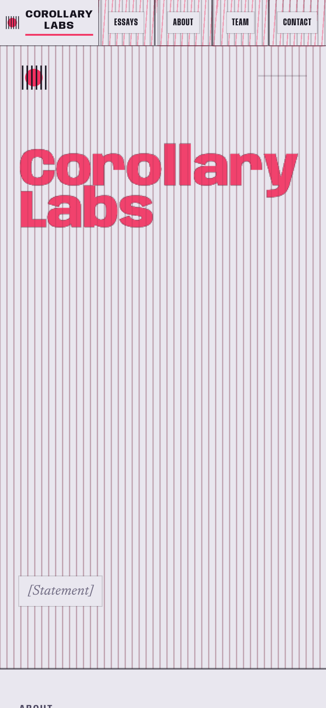
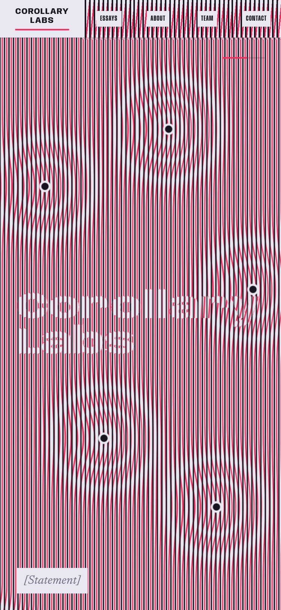
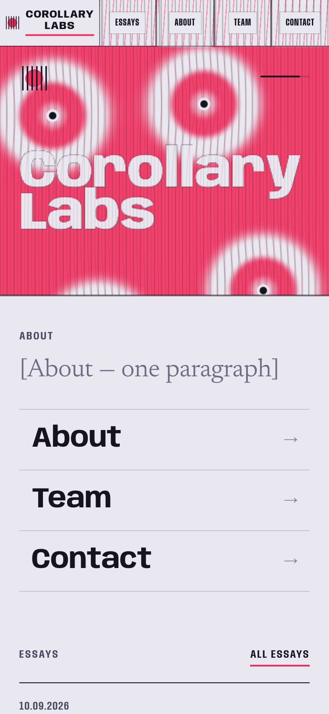
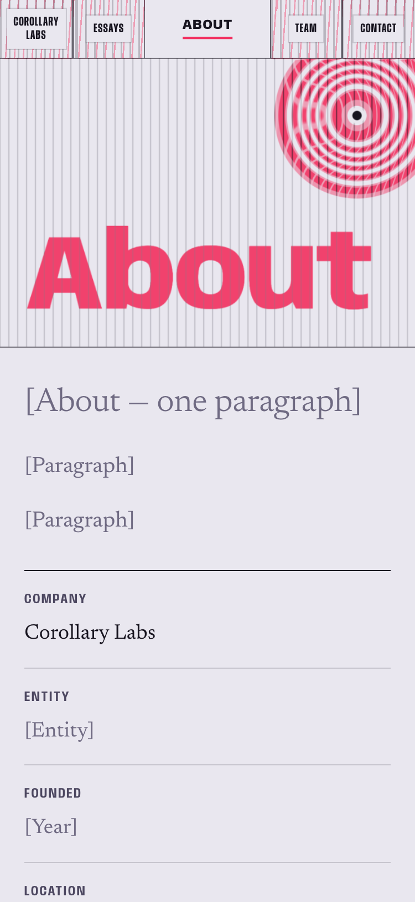

Corollary Labs · direction out · the wildcard
The whole site is one sheet ruled with two identical gratings, one on top of the other. Where nothing has changed they line up and the page is plain. Where something has entered the sheet and pulled it into a new shape, the lower grating slips and a colour shows through as fringes.
Concept
The company's subject is a set of continuous deformations: agents enter an organisation, the organisation reorganises around them (it is not replaced), and the change spreads outward through the economy. We express this with an optical fact, not a diagram. When two superimposed gratings differ by a displacement field, the moiré fringes are the contour lines of that displacement. A reorganised region carries its history as fringes. A region that has fully shifted looks uniform again, only in a new colour. At no point do we draw a firm, a box or a label.
The same rule shapes the navigation. The five pages (Home, Essays, About, Team, Contact) are five regions of the sheet, always in the same order, always on screen. Opening one stretches it; the others fold to narrow strips at its sides, and the fold shows in the strips as strain. Moving between pages is a continuous deformation of one surface: nothing is cut, nothing leaves, and the topology never changes.
Structure
Interaction model
Palette
Unlike the other versions: no paper and green, no bone and ochre, no cream and blue, no black and orange. The accent is never used decoratively. It is the colour of displacement.
Type
Anybody 820 / 150%
Anybody 620 / 60% · fold labels, kickers
Newsreader: reading text, placeholders in italic
A width-variable grotesk (wdth 50–150) lets the type itself be deformed continuously: condensed in the strips, expanded when open, stretched on hover. Newsreader (optical sizes) carries all the reading.
Logo options
A · Latent disc. A square of ruled lines; inside a circle the lower grating is shifted half a pitch, so the disc appears only as colour. This is the site's mechanism in one mark, and it is the favicon.
B · Two centres. Two identical sets of rings, one displaced. Their interference draws the mark, which changes whenever the displacement does. It animates on hover.
C · Folding wordmark. "Corollary Labs" set in one continuous width gradient, from 150 % down to 50 %: the name as a region being folded.
Key frames · desktop






Key frames · phone



